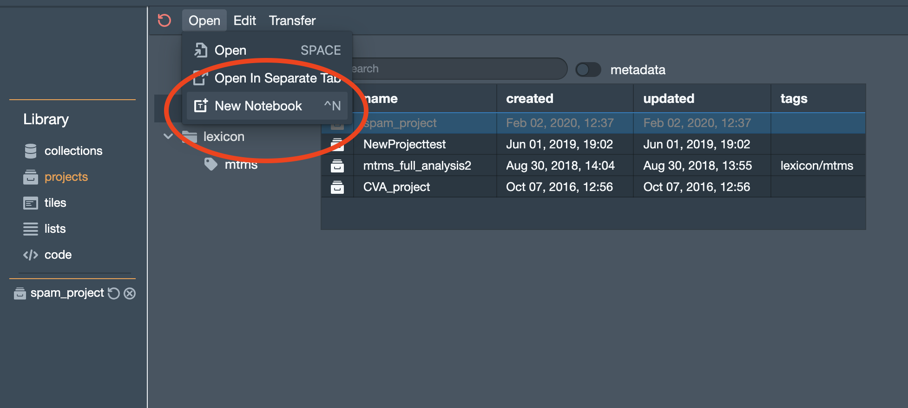

The Log and Notebook¶
As mentioned in the section on the The Main Interface, there is a component at the bottom of the screen called the Log. Tiles can send information to the Log. The Log is also designed to be used more like a full-fledged python notebook.
Furthermore, you can create projects that consist of nothing more than a Notebook of this sort. There are two ways to create one of these Notebook projects. First, from within the Main Interface, you can go to the Project menu and select open-console-as-notebook. This will start a Notebook project using the current contents of the Log.
The second way to create a Notebook project is from the Library manager. Activate the projects pane. Then select New notebook from the Open menu.
Logs and Notebooks pretty much work the same way. Below, I’m going to use the word “Notebook,” but all of this will apply in both cases.
Under the hood¶
In some important ways, the Log and Notebook are tiles. There is a (pretty much) standard tile container associated with a Notebook. Most of the code that you can write in a tile can also be run in a notebook, including all of the commands in the API, both object-oriented and standard.
Tactic notebooks do have some special tricks, however. For example, when you save a standard project or notebook, Tactic attempts to save both the appearance and internal state of the Notebook. I save “attempt” because it’s impossible to do this completely. For example, the internal state associated with a function definition cannot be saved. But Tactic can get pretty close.
Text cells¶

You create a text cell using the insert menu or the associated keyboard shortcut. As shown in the figure above, each text cell as some buttons associated with it. These buttons become visible when the cell is selected or the cursor is in the cell.
You can enter text as Markdown and Latex (see below). If you do, clicking the convert button converts between raw and converted text.
Currently, the library that is used to do the conversion of the markdown to html is markdown-it.
The library used to convert Latex is markdown-it-latex. Refer to the docs for these libraries for syntax specifics.
Code cells¶

You create a text cell using the insert menu or the associated keyboard shortcut. As shown in the figure above, code cells have some special buttons, one to clear any outputs, another to execute the cell.
As mentioned above, code fields in Logs and Notebooks function like a tile. You can write any code that you can write in a tile, which means you can test code here, and that you have access to the whole tile API. (However, some of these commands won’t make sense in Notebooks.)
Any local variables you introduce within a code field are added to a global namespace. This means that these variables shared across the code fields in your Log/Notebook.
Like a tile, output here is treated as html. So you might need to add
html tags to get the output that you want. For example, you might want
to wrap your output in <pre>..</pre> tags.
You can display plots in the console just as you’d expect. But you have to use the same magic commands as in a tile. So it’s a little ugly:
You can also work with the Matplotlib interactive mode if you use the self.create_pyplot_html()
magic command:
Keyboard shortcuts¶
The normal keyboard shortcuts work inside of code items. In addition, Ctrl-Enter and Cmd-Enter will execute a cell. Those same two shortcuts, executed inside of a text cell, will display the formatted text.
The exports viewer¶
As discussed here. The exports viewer is always available on the right hand side of the log and notebook. In addition to displaying any tile exports, the exports viewer displays any variables or objects defined within a Notebook.